Configuring External Storage (GUI)¶
The External Storage Support application enables you to mount external storage services and devices as secondary ownCloud storage devices. You may also allow users to mount their own external storage services.
All of these connect to a LAN ownCloud server that is not publicly accessible, with one exception: Google Drive requires an ownCloud server with a registered domain name that is accessible over the Internet.
Supported mounts¶
ownCloud admins may mount these external storage services and devices:
- Local
- Amazon S3 and S3 compliant
- Dropbox
- FTP/SFTP
- Google Drive
- OpenStack Object Storage
- SMB/CIFS
- SMB/CIFS using OC login
- ownCloud
- WebDAV
ownCloud users can be given permission to mount any of these, except local storage.
Note
A non-blocking or correctly configured SELinux setup is needed for these backends to work. Please refer to the SELinux Configuration.
Enabling External Storage Support¶
Warning
Enabling this app will disable the Stay logged in checkbox on the login page.
The External storage support application is enabled on the Apps page.
After enabling it, go to your Admin page to set up your external
storage mounts.
When your configuration is correct you’ll see a green light at the left, and if it isn’t you’ll see a red light.
Check Enable User External Storage to allow your users to mount their own
external storage services, and check the services you want to allow.
After creating your external storage mounts, you can share them and control permissions just like any other ownCloud share.
Using self-signed certificates¶
When using self-signed certificates for external storage mounts the certificate needs to be imported in the personal settings of the user. Please refer to this blogpost for more information.
Adding files to external storages¶
In general it is recommended to configure the background job Webcron or
Cron as described in Defining Background Jobs
so ownCloud is able to detect files added to your external storages without the need
for a user to be browsing your ownCloud installation.
Please also be aware that ownCloud might not always be able to find out what has been changed remotely (files changed without going through ownCloud), especially when it’s very deep in the folder hierarchy of the external storage.
You might need to setup a cron job that runs sudo -u www-data php occ files:scan --all
(or replace “–all” with the user name, see also Using the occ Command)
to trigger a rescan of the user’s files periodically (for example every 15 minutes), which includes
the mounted external storage.
Local Storage¶
Use this to mount any directory on your ownCloud server that is outside of your
ownCloud data/ directory. This directory must be readable and writable by
your HTTP server user.
In the Folder name field enter the folder name that you want to appear on
your ownCloud Files page.
In the Configuration field enter the full filepath of the directory you
want to mount.
In the Available for field enter the users or groups who have permission to
access the mount.

Amazon S3¶
All you need to connect your Amazon S3 buckets to ownCloud is your S3 Access Key, Secret Key, and your bucket name.
In the Folder name field enter the folder name that you want to appear on
your ownCloud Files page.
In the Access Key field enter your S3 Access Key.
In the Secret Key field enter your S3 Secret Key.
In the Bucket field enter the name of your S3 bucket you want to share.
In the Available for field enter the users or groups who have permission to
access your S3 mount.
The hostname, port, and region of your S3 server are optional; you will need to use these for non-Amazon S3-compatible servers.
Dropbox¶
While Dropbox supports the newer OAuth 2.0, ownCloud uses OAuth 1.0, so you can safely ignore any references to OAuth 2.0 in the Dropbox configuration.
Connecting Dropbox is a little more work because you have to create a Dropbox app. Log into the Dropbox Developers page and click Create Your App:
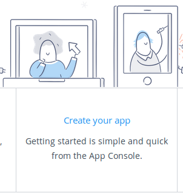
Next, for Choose an API check Dropbox API.
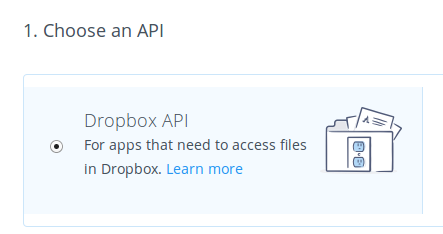
The next option is choosing which folders to share, or to share everything in your Dropbox.
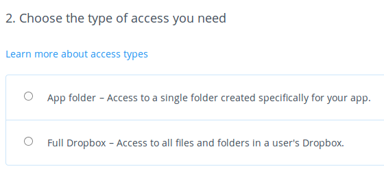
Then enter your app name. This is anything you want it to be.
Then click the Create App button.
Now you are on your app page, which displays its settings and more options. Do not click Development (Apply for production) because that is for apps that you want to release publicly.
Click Enable additional users to allow multiple ownCloud users to access your new Dropbox share.
Now go to your ownCloud Admin page. Your ownCloud configuration requires only the local mount name, the App Key and the App Secret, and which users or groups have access to the share. Remember the little gear icon at the far right for additional options.
After entering your local mount name, enter App Key and App Secret.
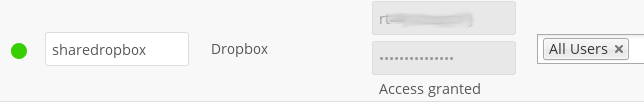
If you are not already logged into Dropbox, you will be prompted to login and authorize access. This happens only once, when you are first creating the new share. Click Allow, and you’re done.
FTP/FTPS/SFTP¶
Connecting to an FTP server requires:
- Whatever name you want for your local mountpoint.
- The URL of your FTP server, and optionally the port number.
- FTP server username and password.
- Remote Subfolder, the FTP directory to mount in ownCloud. ownCloud defaults to the root
directory. When you specify a different directory you must leave off the
leading slash. For example, if you want to connect your
public_html/imagesdirectory, then type it exactly like that. - Choose whether to connect in the clear with
ftp://, or to encrypt your FTP session with SSL/TLS overftps://(Your FTP server must be configured to supportftps://) - Enter the ownCloud users or groups who are allowed to access the share.
Note
The external storage FTP/FTPS/SFTP needs the allow_url_fopen PHP
setting to be set to 1. When having connection problems make sure that it is
not set to 0 in your php.ini.

SFTP uses SSH rather than SSL, as FTPS does, so your SFTP sessions are always safely tucked inside an SSH tunnel. To connect an SFTP server you need:
- Whatever name you want for your local mountpoint.
- The URL of your SFTP server.
- SFTP server username and password.
- Remote Subfolder, the SFTP directory to mount in ownCloud.
- The ownCloud users or groups who are allowed to access the share.
Google Drive¶
ownCloud uses OAuth 2.0 to connect to Google Drive. This requires configuration through Google to get an app ID and app secret, as ownCloud registers itself as an app.
All applications that access a Google API must be registered through the Google Cloud Console. Follow along carefully because the Google interface is a bit of a maze and it’s easy to get lost.
If you already have a Google account, such as Groups, Drive, or Mail, you can use your existing login to log into the Google Cloud Console. After logging in click the Create Project button.
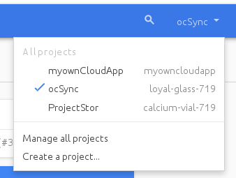
Give your project a name, and either accept the default Project ID or create your own, then click the Create button.

You’ll be returned to your dashboard.
{kind=link}
Google helpfully highlights your next step in blue, the Use Google APIs box. Make sure that your new project is selected, click on Use Google APIs , and it takes you to Google’s APIs screen. There are many Google APIs; look for the Google Apps APIs and click Drive API.

Drive API takes you to the API Manager overview. Click the blue Enable API button.
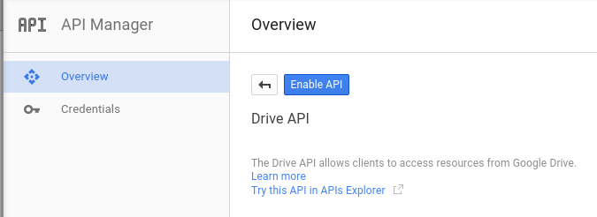
Now you must create your credentials, so click on Go to credentials.
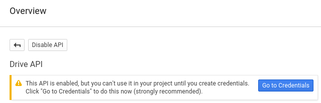
For some reason Google warns us again that we need to create credentials. We will use 0Auth 2.0.
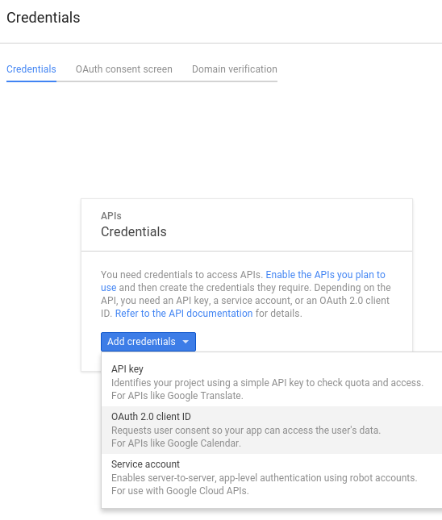
Now we have to create a consent screen. This is the information in the screen Google shows you when you connect your new Google app to ownCloud the first time. Click Configure consent screen. Then fill in the required form fields. Your logo must be hosted, as you cannot upload it, so enter its URL. When you’re finished click Save.

The next screen that opens is Create Client ID. Check Web Application,
then enter your app name. Authorized JavaScript Origins is your root
domain,
for example https://www.example.com, without a trailing slash. You need two
Authorized Redirect URIs, and they must be in this form:
https://example.com/owncloud/index.php/settings/personal
https://example.com/owncloud/index.php/settings/admin
Replace https://example.com/owncloud/ with your own ownCloud server URL,
then click Create.

Now Google reveals to you your Client ID and Client Secret. Click OK.

You can see these anytime in your Google console; just click on your app name to see complete information.
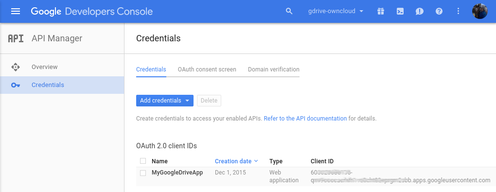
Now you have everything you need to mount your Google Drive in ownCloud.
Go to the External Storage section of your Admin page, create your new folder name, enter the Client ID and Client Secret, and click Grant Access. Your consent page appears when ownCloud makes a successful connection. Click Allow.
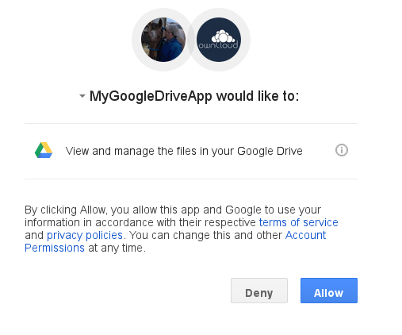
When you see the green light confirming a successful connection you’re finished.
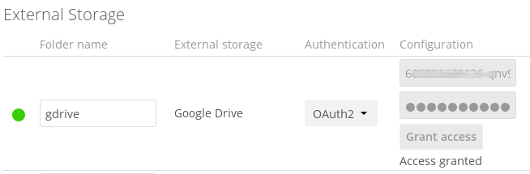
SMB/CIFS¶
You can mount SMB/CIFS file shares on ownCloud servers that run on Linux. This
only works on Linux ownCloud servers because you must have smbclient
installed. SMB/CIFS file servers include any Windows file share, Samba servers
on Linux and other Unix-type operating systems, and NAS appliances.
You need the following information:
- Folder name – Whatever name you want for your local mountpoint.
- Host – The URL of the Samba server.
- Username – The username or domain/username used to login to the Samba server.
- Password – The password to login to the Samba server.
- Share – The share on the Samba server to mount.
- Remote Subfolder – The remote subfolder inside the Samba share to mount (optional, defaults to
/). To assign the ownCloud logon username automatically to the subfolder, use$userinstead of a particular subfolder name.
And finally, the ownCloud users and groups who get access to the share.
SMB/CIFS using OC login¶
This works the same way as setting up a SMB/CIFS mount, except you can use your ownCloud logins intead of the SMB/CIFS server logins. To make this work, your ownCloud users need the same login and password as on the SMB/CIFS server.
Note
Shares set up with SMB/CIFS using OC login cannot be shared in
ownCloud. If you need to share your SMB/CIFS mount, then use the SMB/CIFS
mount without oC login.
ownCloud and WebDAV¶
Use these to mount a directory from any WebDAV server, or another ownCloud server.
- Folder name – Whatever name you want for your local mountpoint.
- URL – The URL of the WebDAV or ownCloud server.
- Username and password for the remote server
- Remote Subfolder – The remote subfolder you want to mount (optional, defaults
to
/) - Secure
https://- Whether to usehttps://to connect to the WebDav server instead ofhttp://(We always recommendhttps://for security)

Note
CPanel users should install Web Disk to enable WebDAV functionality.
OpenStack Object Storage¶
Use this to mount a container on an OpenStack Object Storage server. You need the following information:
- Username
- Bucket
- Region
- API Key
- Tenantname
- Password
- Service Name
- URL of identity Endpoint
- Timeout of HTTP request
Configuration File¶
The configuration of mounts created within the External Storage App are stored
in the data/mount.json file. This file contains all settings in JSON
(JavaScript Object Notation) format. Two different types of entries exist:
- Group mounts: Each entry configures a mount for each user in group.
- User mount: Each entry configures a mount for a single user or all users.
For each type, there is a JSON array with the user/group name as key and an array of configuration values as the value. Each entry consist of the class name of the storage backend and an array of backend specific options (described above) and will be replaced by the user login.
Although configuration may be done by making modifications to the
mount.json file, it is recommended to use the Web-GUI in the administrator
panel (as described in the above section) to add, remove, or modify mount
options to prevent any problems. See Configuring External Storage (Configuration File) for
configuration examples.